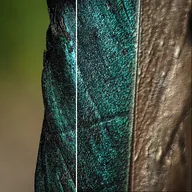

凹凸贴图

根据图层亮度模拟凸起表面并添加光照，在保留颜色的同时呈现浮雕质感。
设置
| 设置项 | 类型 | 范围 | 默认值 |
|---|---|---|---|
| 光照角度 | 角度 | -3600° 至 3600° | 135° |
| 高度 | 数字 | 0 至 30 | 4 |
| 环境光 | 数字 | 0 至 1 | 0.4 |
| 光泽 | 数字 | 0 至 1 | 0.3 |
| 光照颜色 | 颜色 | – | #FFFFFF |

根据图层亮度模拟凸起表面并添加光照，在保留颜色的同时呈现浮雕质感。
| 设置项 | 类型 | 范围 | 默认值 |
|---|---|---|---|
| 光照角度 | 角度 | -3600° 至 3600° | 135° |
| 高度 | 数字 | 0 至 30 | 4 |
| 环境光 | 数字 | 0 至 1 | 0.4 |
| 光泽 | 数字 | 0 至 1 | 0.3 |
| 光照颜色 | 颜色 | – | #FFFFFF |